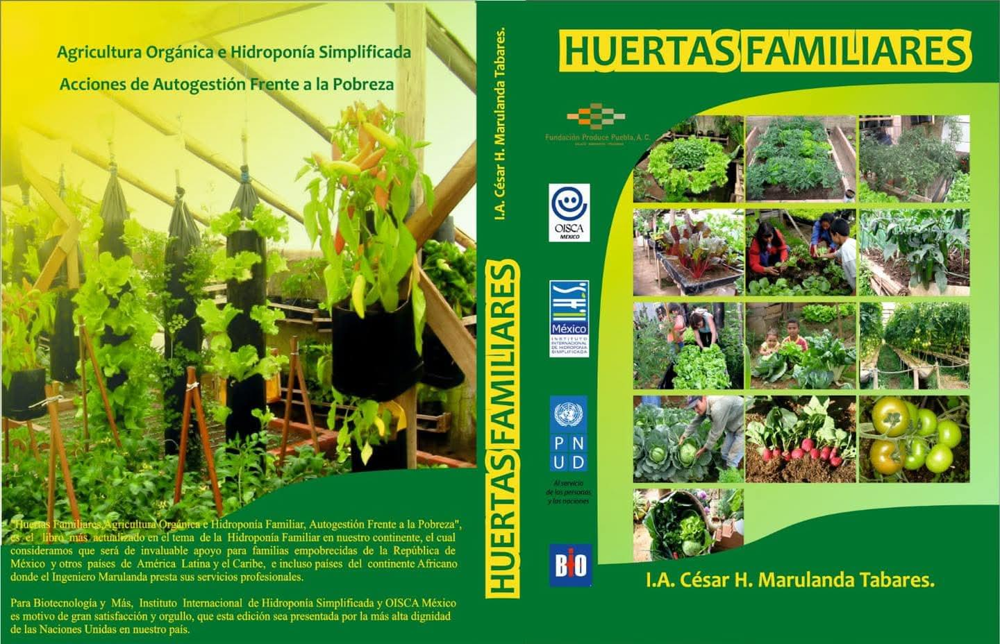

PROYECTOS:
PROYECTOS:
Santa Ana Teloxtoc (Puebla) y otros lugares (mencionado el "Community Garden Project in Colonia San Martin", aunque puede ser una referencia a una colonia en México o en otro país donde OISCA opera).

Estos proyectos se desarrollan en colaboración con instituciones como la Benemérita Universidad Autónoma de Puebla (BUAP) y tienen como fin:
Enseñar a las comunidades a establecer huertos familiares.Realizar actividades de recolección de semillas de plantas en peligro de extinción, promoviendo la biodiversidad.Utilizar los huertos como herramienta para el desarrollo social, la educación ambiental y el bienestar nutricional de las familias.Se enfoca en el desarrollo de capacidades locales.


Tehuacán, Puebla (Complejo Regional Sur de la BUAP) El convenio tiene como objetivo fomentar la movilidad estudiantil y el desarrollo humano a través del voluntariado. Esto permite a los estudiantes participar en los proyectos de OISCA (como los huertos y la hidroponía) para: Promover el desarrollo regional mediante trabajos de beneficio social y ambiental.Ofrecer oportunidades de aprendizaje práctico en agricultura sostenible y desarrollo comunitario.